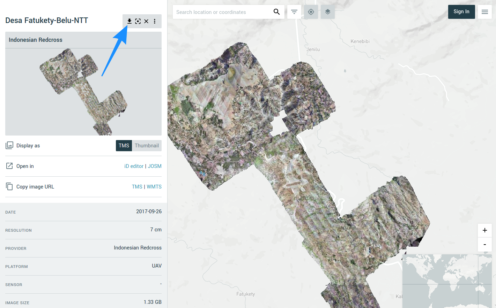

Introduction
This tutorial will show you how to read a Cloud Optimized GeoTIFF (COG) in QGIS - streaming straight from its online location instead of downloading it. Since QGis release 3.2, reading COG is supported within the data source manager (See changelog). Earlier releases (e.g. long term release 2.18.28 'Las Palmas' did not yet supported reading a COG as a main operation, but since QGIS already used GDAL as its main data format library it’s possible with a little bit of configuration in those versions as well.
Finding a COG to test
Some users will already have a Cloud Optimized GeoTIFF that they can use, but if you don’t and want to try out COG’s yourself then head over to OpenAerialMap. Browse around and find an image that suits your fance. I’m going to use this one from the Indonesian Red Cross. To get the proper reference to the Cloud Optimized GeoTIFF you must right-click on the ‘download’ icon and then click ‘copy link address.
This will copy the link you need to your clipboard. You can paste this into a scratch pad document to use later, or you can just not copy anything else and use it in our next step in QGIS.
Loading COG in QGIS
QGis 3.2 or later
QGis versions befor QGis 3.2
The key to reading a Cloud Optimized GeoTIFF with QGIS is the ‘vsicurl’ virtual file system of GDAL. Normally QGIS will open any raster file with GDAL, and an online file read with vsicurl should be no different, but unfortunately there is a hard coded assumption in the QGIS GUI that if you’re adding a raster layer that is not WMS or WCS then of course it must be a file.

Thankfully there is a way around it, with another great feature of GDAL - Virtual Rasters (VRT’s). And QGIS has a great little tool to build a virtual raster.
We want to create our Virtual Raster (VRT) in QGIS. To do this make sure you have the GDAL Tools Plugin installed in QGIS (it should ship standard in most distributions). And then navigate to Raster -> Miscellaneous -> Build Virtual Raster (Catalog).

When you click on that it should open a dialog box that helps you create a VRT to read your cloud optimized geotiff. The key bit to make it work is to prepend /vsicurl/ before your pasted in URL from the link location. So for our link the ‘Input files’ field should look like:
/vsicurl/http://oin-hotosm.s3.amazonaws.com/59d33df023c8440011d7b26d/0/b378087a-c2a5-43a0-abec-71fcfb051150.tif
Specify an output file where you want to save the small file that contains the pointer to the online COG.

You can leave the rest of the defaults as is, or try out things like reprojection. If you want transparency you can select the 'Source No Data' option, and it will use that color value as 'transparent'. 0 is 'real black', which can often be transparent, but it has an annoying side effect of making pure black pixels in your image also transparent. For this exercise we are just using one COG, but you could just as easily point at multiple ones online, just put a comma between each (with no space). And be sure to prepend /vsicurl/ onto each of them.
If you leave ‘Load into canvas when finished’ checked, then after a bit of processing time you should see your COG displayed as an active layer in QGIS.

Admittedly this looks about the same as downloading and using a GeoTIFF locally. But the power of the Cloud Optimized GeoTIFF becomes apparent when you zoom in. On fast connections it should take less than a second to redraw, at full resolutions. This is a little slower than downloading the whole file and loading it up locally.

So you can try to hit the download button from OpenAerialMap to compare the performance. But what you’ll find there is a 1.2 gigabyte file that takes quite awhile to download on all but the fastest connections. The advantage of using the Cloud Optimized GeoTIFF is that you can zoom to anywhere within seconds, instead of waiting for a huge GeoTIFF to download. This access pattern saves everyone time and money, by getting to people only the data they need to do their task. And it enables access to fully analytic data, not just the visualization that web tiles allow.